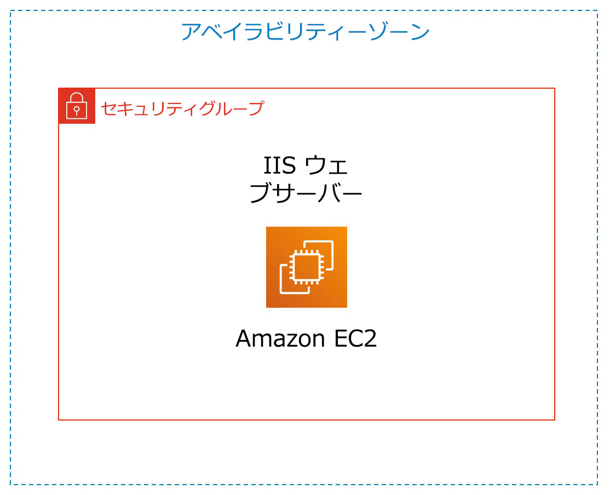

ラボ 3: Amazon EC2 の紹介
バージョン 1.1.7 (spl200)
概要

このラボでは、Amazon EC2 インスタンスの作成、サイズ変更、管理、モニタリングの概要が扱われます。
Amazon Elastic Compute Cloud (Amazon EC2) は、クラウド内で規模を変更できるコンピューティング性能を提供するウェブサービスです。デベロッパーがウェブスケールのクラウドコンピューティングを簡単に利用できるよう作られています。
Amazon EC2 のシンプルなウェブサービスインターフェイスを通して必要なキャパシティーを取得し、簡単に設定することができます。使用するコンピューティングリソースは、お客様自身が完全にコントロールでき、Amazon の実績あるコンピューティング環境で実行できます。Amazon EC2 では、新しいサーバーインスタンスの取得と起動に要する時間は分単位にまで短縮されるため、キャパシティーの拡張も縮小も、コンピューティング要件の変化に合わせてすばやく実行できます。
また、Amazon EC2 はコンピューティングの経済性をも変革します。お支払いいただく料金は、実際に使用したキャパシティーの分のみです。デベロッパーは、Amazon EC2 のツールを利用して、耐障害性のあるアプリケーションを構築し、よくある障害シナリオの影響を受けないように設計できます。
取り上げるトピック
このラボを修了すると、次のことができるようになります。
- 削除保護を有効にしてウェブサーバーを作成する
- EC2 インスタンスをモニタリングする
- ウェブサーバーで使用するセキュリティグループを変更し、HTTP アクセスを許可する
- Amazon EC2 インスタンスのサイズを変更してスケールする
- EC2 の制限について調べる
- 削除保護をテストする
- EC2 インスタンスを削除する
所要時間
このラボは、完了までにおよそ 35 分 かかります。
AWS マネジメントコンソールにアクセスする
この手順の上部にある Start Lab をクリックして、ラボを起動します。
[Start Lab] パネルが開き、ラボのステータスが表示されます。
Lab status: ready というメッセージが表示されるまで待ち、[X] をクリックして [Start Lab] パネルを閉じます。
この手順の上部にある AWS をクリックします。
新しいブラウザタブで AWS マネジメントコンソールが開きます。システムによって自動的にログインします。
ヒント: 新しいブラウザタブが開かない場合、通常、ブラウザによってサイトのポップアップウィンドウの表示がブロックされたことを示すバナーまたはアイコンがブラウザの上部に表示されます。バナーまたはアイコンをクリックし、[ポップアップを許可] をクリックします。
AWS マネジメントコンソールのタブをこの手順の横に配置します。ラボのステップを簡単に参照できるように、両方のブラウザタブを同時に表示することをお勧めします。
タスク 1: Amazon EC2 インスタンスを作成する
このタスクでは、削除保護を有効にした Amazon EC2 インスタンスを作成します。削除保護は、EC2 インスタンスが意図せずに削除されてしまうのを防止する機能です。ユーザーデータスクリプトを使用してインスタンスをデプロイします。これにより、シンプルなウェブサーバーをデプロイできます。
- AWS マネジメントコンソールの [サービス] で [EC2] をクリックします。
- インスタンスを起動 、インスタンスを起動 の順に選択します
ステップ 1: Amazon マシンイメージ (AMI) を選択する
Amazon マシンイメージ (AMI) は、クラウドの仮想サーバーであるインスタンスの作成に必要な情報を提供します。AMI には以下のものが含まれます。
- インスタンスのルートボリュームのテンプレート（オペレーティングシステム、アプリケーションサーバー、アプリケーションなど）
- どの AWS アカウントが AMI を使用してインスタンスを作成できるかを管理する起動許可
- インスタンスの作成時にインスタンスにアタッチするボリュームを指定するブロックデバイスマッピング
クイックスタートリストには、最もよく使用される AMI が掲載されています。独自の AMI を作成することも、AWS Marketplace で AMI を選ぶこともできます。Marketplace は、AWS で実行できるソフトウェアを売買するためのオンラインストアです。
- Amazon Linux 2 AMI (リストの一番上) の横にある 選択 をクリックします。
ステップ 2: インスタンスタイプを選択する
Amazon EC2 には、多様なユースケースに合わせて最適化されたさまざまなインスタンスタイプが用意されています。インスタンスタイプは CPU、メモリ、ストレージ、ネットワークキャパシティーのさまざまな組み合わせによって構成されているため、アプリケーションに合わせて適切なリソースの組み合わせを柔軟に選択できます。各インスタンスタイプのインスタンスサイズには 1 つ以上の選択肢があり、対象のワークロードの要件に応じてリソースをスケールできます。
ここでは t2.micro インスタンスを使用します。デフォルトでチェックボックスがオン になっています。このインスタンスタイプには、1 つの仮想 CPU と 1 GiB のメモリが搭載されています。注意: このラボでは、他のインスタンスタイプの使用が制限されている場合があります。
- 次のステップ: インスタンスの詳細の設定 をクリックします
ステップ 3: インスタンスの詳細を設定する
このページでは、要件に合わせてインスタンスを設定します。これにはネットワークとモニタリングの設定が含まれます。
[ネットワーク] は、インスタンスをどの Virtual Private Cloud (VPC) に作成するかを示します。開発用、テスト用、本番用などの複数のネットワークを設定できます。
[ネットワーク] で [Lab VPC] を選択します。
Lab VPC は、ラボのセットアッププロセス中に AWS CloudFormation テンプレートを使用して作成されました。この VPC では、2 つの異なるアベイラビリティーゾーンにパブリックサブネットが 2 つ設定されています。
[終了保護の有効化] で、 誤った終了を防止します チェックボックスをオンにします。
不要になった Amazon EC2 インスタンスは削除することができます。削除すると、そのインスタンスは停止され、そのリソースが解放されます。削除されたインスタンスを再起動することはできません。インスタンスが意図せずに削除されてしまうことを防ぐには、そのインスタンスの削除保護を有効化します。これにより、インスタンスの削除を防止できます。
- 下にスクロールし、 高度な詳細 を展開します。
[ユーザーデータ] フィールドが表示されます。
インスタンスの作成時には、ユーザーデータをインスタンスに渡すことができます。ユーザーデータを利用して、自動化された一般的な設定作業を実行することや、インスタンスの開始後にスクリプトを実行させることができます。
このインスタンスでは Amazon Linux が実行されているので、インスタンスの開始時に実行されるシェルスクリプトを用意します。
以下のコマンドをコピーして [ユーザーデータ] フィールドに貼り付けます。
#!/bin/bashyum -y install httpdsystemctl enable httpdsystemctl start httpdecho '<html><h1>Hello From Your Web Server!</h1></html>' > /var/www/html/index.htmlスクリプトによって以下が行われます。
- Apache ウェブサーバー（httpd）をインストールする
- ブート時に自動的に開始されるようウェブサーバーを設定する
- ウェブサーバーをアクティベートする
- シンプルなウェブページを作成する
- 次のステップ: ストレージの追加 をクリックします。
ステップ 4: ストレージを追加する
Amazon EC2 では Elastic Block Store と呼ばれる、ネットワークに接続された仮想ディスクにデータが保存されます。
ここでは、デフォルトの 8 GiB ディスクボリュームを使用して Amazon EC2 インスタンスを作成します。これがルートボリューム（ブートボリュームとも呼ばれる）になります。
- 次のステップ: タグの追加 をクリックします。
ステップ 5: タグを追加する
タグを使用することで、目的別、オーナー別、環境別など、さまざまな方法で AWS リソースを分類できます。タグは同タイプのリソースが多数ある場合に便利です。割り当てておいたタグに基づいて特定のリソースをすばやく判別できます。それぞれのタグは、ユーザーが定義するキーと値で構成されています。
- タグの追加 をクリックし、次の内容を設定します。
- キー:
Name - 値:
Web Server
- 次のステップ: セキュリティグループの設定 をクリックします
ステップ 6: セキュリティグループを設定する
セキュリティグループは、1 つ以上のインスタンスのトラフィックを制御する仮想ファイアウォールとして機能します。インスタンスを作成する際、1 つ以上のセキュリティグループをインスタンスに関連付け、各セキュリティグループにルールを追加し、関連付けられたインスタンスに対するトラフィックを許可します。セキュリティグループのルールはいつでも変更できます。新しいルールは、セキュリティグループに関連付けられているインスタンスすべてに自動的に適用されます。
- [ステップ 6: セキュリティグループの設定] で次の内容を設定します。
- セキュリティグループ名:
Web Server security group - 説明:
Security group for my web server
このラボでは、インスタンスへのログインに SSH を使用しません。SSH によるアクセスを禁止することにより、インスタンスのセキュリティを強化できます。
- 既存の SSH ルールを 削除 します。
- 確認と作成 をクリックします
ステップ 7: インスタンス作成を確認する
確認ページに、作成するインスタンスの設定内容が表示されます。
- 起動 をクリックします
[既存のキーペアを選択するか、新しいキーペアを作成します] ウィンドウが表示されます。
Amazon EC2 では公開鍵暗号を使用し、ログイン情報の暗号化と復号を行います。インスタンスにログインするには、まずキーペアを作成します。インスタンスの作成時にキーペアの名前を指定し、インスタンスに接続するときにプライベートキーを指定する必要があります。
このラボではインスタンスにログインしないため、キーペアは不要です。
- [既存のキーペアの選択 ] ドロップダウンをクリックし、[キーペアなしで続行] を選択します。
- [この AMI に組み込まれたパスワードがわからないと、このインスタンスに接続できないことを認識しています。] チェックボックスをオンにします。
- インスタンスの作成 をクリックします
これでインスタンスが作成されます。
- インスタンスの表示 をクリックします
作成中のインスタンスは [保留中] 状態と表示されます。その後、表示が [実行中] に変わり、インスタンスの起動が開始したことが示されます。インスタンスにアクセスできるようになるまで少し時間がかかります。
インスタンスには、インターネットからのアクセスに必要なパブリック DNS 名が付与されます。
使用する Web Server が選択されているはずです。[Description (説明)] タブにはインスタンスの詳細情報が表示されます。
[詳細] タブの表示項目を多くするには、ウィンドウの分割線を上にドラッグします。
[詳細] タブに表示された情報を確認します。インスタンスタイプ、セキュリティ設定、ネットワーク設定についての情報を確認できます。
- インスタンスに以下が表示されるまで待ちます。
- インスタンスの状態: 実行中
- ステータスチェック: 2/2 のチェックに合格しました
お疲れ様でした。初めての Amazon EC2 インスタンスの作成が完了しました。
タスク 2: インスタンスをモニタリングする
モニタリングは、Amazon Elastic Compute Cloud (Amazon EC2) インスタンスと AWS ソリューションの信頼性、可用性、パフォーマンスを維持するうえで重要です。
- [ステータスチェック] タブをクリックします。
インスタンスステータスをモニタリングすることで、アプリケーションの実行を妨げる何らかの問題が Amazon EC2 で検出されているかどうかをすばやく判別できます。Amazon EC2 では、実行中の EC2 インスタンスすべてが自動的にチェックされ、ハードウェアとソフトウェアの問題が特定されます。
システムの接続性とインスタンスの接続性の両方のチェックに合格していることを確認します。
- [モニタリング] タブをクリックします。
このタブには、インスタンスの Amazon CloudWatch メトリクスが表示されます。現時点では、インスタンスが作成されたばかりであるため、表示されるメトリクスの数は多くありません。
表示を拡大するには、グラフをクリックします。
Amazon EC2 によって、使用している EC2 インスタンスのメトリクスが Amazon CloudWatch に送られます。デフォルトでは、基本モニタリング (5 分) が有効になっています。詳細モニタリング (1 分) を有効にすることもできます。
- アクション ドロップダウンメニューから [モニタリングとトラブルシューティング] [システムログを取得] の順に選択します。
システムログにインスタンスのコンソール出力が表示されます。このツールは問題の診断に役立ちます。特に、SSH デーモンが起動されるまでにインスタンスが削除されたり到達不能になったりする可能性のある、カーネルの問題やサービス設定の問題のトラブルシューティングに便利です。システムログが表示されない場合は、数分待ってから再度試してください。
- 出力内容を最後までスクロールします。HTTP パッケージがインスタンス作成時に追加したユーザーデータからインストールされたことを確認できます。

- [キャンセル] をクリックします。
- アクション ドロップダウンメニューから [モニタリングとトラブルシューティング] [インスタンスのスクリーンショットを取得] の順に選択します。
これにより、スクリーンが接続されているとしたら Amazon EC2 インスタンスコンソールにはどのような内容が表示されるか見ることができます。

SSH や RDP を介してインスタンスに到達できない場合、インスタンスのスクリーンショットをキャプチャし、画像として確認できます。こうしてインスタンスの状態を可視化することで、トラブルシューティングを迅速に行うことができます。
- [キャンセル] をクリックします。
お疲れ様でした。インスタンスをモニタリングするいくつかの方法を確認することができました。
タスク 3: セキュリティグループを更新してウェブサーバーにアクセスする
EC2 インスタンスを作成したときに、スクリプトによってウェブサーバーのインストールとシンプルなウェブページの作成を行いました。このタスクでは、ウェブサーバーからのコンテンツにアクセスします。
- [詳細] タブをクリックします。
- インスタンスの [パブリック IPv4 アドレス] をクリップボードにコピーします。
- ウェブブラウザで新しいタブを開き、コピーした IP アドレスを貼り付けて Enter キーを押します。
質問: ウェブサーバーにアクセスできましたか?なぜ接続できないか考えてみましょう。
今ウェブサーバーにアクセスできないのは、HTTP ウェブリクエストに使用されるポート 80 でインバウンドトラフィックがセキュリティグループによって許可されていないためです。これはセキュリティグループをファイアウォールとして使用し、インスタンスに出入りするネットワークトラフィックを制限する実例です。
この状態を修正するために、ポート 80 でウェブトラフィックを許可するようセキュリティグループを更新します。
- ブラウザのそのタブは開いたままにし、[EC2 Management Console] タブに戻ります。
- 左側のナビゲーションペインで [セキュリティグループ] をクリックします。
- Web Servedr security group を選択します。
- [インバウンドルール] タブをクリックします。
現在、このセキュリティグループにはルールがありません。
- インバウンドルールを編集 をクリックして [ルールを追加] をクリッしてから次のように設定します。
- タイプ: HTTP
- リソースタイプ: 任意の場所
- ルールを保存 をクリックします
- 先ほど開いたウェブサーバーのタブに戻り、ページを 更新します。
Hello From Your Web Server! というメッセージが表示されます。
お疲れ様でした。Amazon EC2 インスタンスへの HTTP トラフィックを許可するようセキュリティグループを変更することができました。
タスク 4: インスタンスのサイズを変更する: インスタンスタイプと EBS ボリューム
ニーズが変化するにつれて、インスタンスの使用率が高すぎたり（インスタンスタイプが小さすぎる）、低すぎたりする（インスタンスタイプが大きすぎる）ことに気付く場合があります。この場合は、インスタンスタイプを変更できます。例えば、t2.micro インスタンスが現在のワークロードには小さすぎる場合、m5.medium インスタンスに変更できます。同様に、ディスクのサイズも変更できます。
インスタンスを停止する
サイズを変更する場合、インスタンスを事前に停止する必要があります。
停止したインスタンスはシャットダウンされます。停止した EC2 インスタンスには料金が発生しませんが、アタッチされた Amazon EBS ボリュームのストレージには引き続き料金が発生します。
- EC2 マネジメントコンソールの左側のナビゲーションペインで [インスタンス] をクリックします。
Web Server が選択されているはずです。
- インスタンスの状態 ドロップダウンメニューから [インスタンスの停止] を選択します。
- 停止 をクリックします。
インスタンスは、通常のシャットダウンが実行された後に停止します。
- [インスタンスの状態] に 停止済み と表示されるまで待ちます。
インスタンスタイプを変更する
- アクション ドロップダウンメニューから [インスタンスの設定] [インスタンスタイプを変更] の順に選択して、以下のように設定します。
- インスタンスタイプ: t2.small
- 適用 をクリック
再起動されたインスタンスは t2.small になります。このタイプはメモリが t2.micro インスタンスの 2 倍あります。注意: このラボでは、他のインスタンスタイプの使用が制限されている場合があります。
EBS ボリュームのサイズを変更する
- 左側のナビゲーションペインで [ボリューム] をクリックします。
- アクション ドロップダウンメニューから [ボリュームの変更] を選択します。
現在のディスクボリュームのサイズは 8 GiB です。このディスクサイズを増やします。
- サイズを
10に変更します。注意: このラボでは、大きい Amazon EBS ボリュームの作成が制限される場合があります。 - 変更 を選択します。
- はい を選択して確定し、ボリュームのサイズを増やします。
- 閉じる を選択します
サイズが変更されたインスタンスを起動する
ここでインスタンスを再起動します。インスタンスはメモリとディスク容量が増加しています。
- 左側のナビゲーションペインで [インスタンス] をクリックします。
- インスタンスの状態 ドロップダウンメニューから [インスタンスを開始] を選択します。
- インスタンスが開始します。
お疲れ様でした。Amazon EC2 インスタンスのサイズ変更が完了しました。このタスクでは、インスタンスタイプを t2.micro から t2.small に変更しました。また、ルートディスクボリュームも 8 GiB から 10 GiB に変更しました。
タスク 5: EC2 の制限について調べる
Amazon EC2 には、利用可能なさまざまなリソースが用意されています。これらのリソースにはイメージ、インスタンス、ボリューム、スナップショットなどがあります。AWS アカウントを作成すると、これらのリソースにはデフォルトでリージョンごとの制限が設定されています。
- 左側のナビゲーションペインで [制限] をクリックします。
- ドロップダウンリストで [実行中のインスタンス] を選択します。
このリージョンでは、起動できるインスタンスの数に制限があることに注意してください。リクエストによって使用量がそのリージョンにおけるその時点でのインスタンス制限を超えてしまう場合、インスタンスを起動できません。
これらの制限はリクエストによって引き上げることができます。
タスク 6: 終了保護機能をテストする
不要になったインスタンスは消去できます。つまりインスタンスを削除できます。削除されたインスタンスは再接続したり再起動したりすることはできません。
このタスクでは、終了保護の使用方法を学習します。
- 左側のナビゲーションペインで [インスタンス] をクリックします。
- インスタンスの状態 ドロップダウンメニューから [インスタンスを終了] を選択します。
- 次に 終了 をクリックします。
インスタンス i-1234567xxx の修了に失敗しましたというメッセージが表示されていることを確認します。インスタンス i-1234567xxx は削除できません。disableApiTermination インスタンスの属性を変更して、もう一度お試しください。
これは、意図しないインスタンスの削除を防止する安全策です。インスタンスを削除する場合は、削除保護を無効にする必要があります。
- アクション ドロップダウンメニューから [インスタンスの設定] [終了保護を変更] の順に選択します。
- [有効化] の横のチェックをオフにします。
- 保存 を選択します
これでインスタンスを削除できます。
- インスタンスの状態 ドロップダウンメニューから [インスタンスを終了] を選択します。
- 終了 をクリックします
お疲れ様でした。削除保護機能をテストし、インスタンスを削除することができました。
ラボの終了
お疲れ様でした。これでラボが完了しました。
- ラボの終了を確認するには、このページの上部にある End Lab をクリックし、Yes をクリックします。
パネルが表示され、「DELETE has initiated...You may close this message box now.」というメッセージが表示されます。
- 右上隅の [X] をクリックしてパネルを閉じます。
フィードバック、ご提案、修正については、aws-course-feedback@amazon.com まで E メールにてご連絡ください。